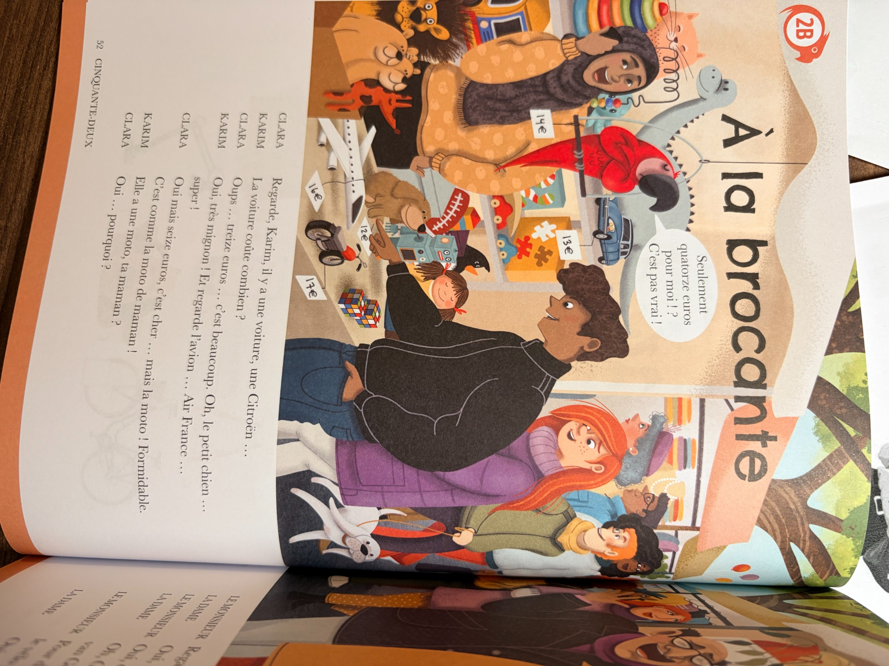
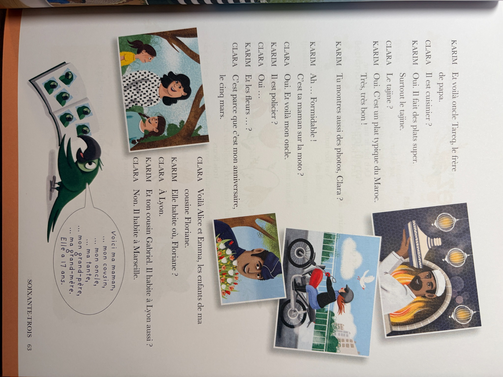

目前下方逐句对照仅包含已核实的课文片段，尚未覆盖教材全部台词；教材原页完整显示在上方。未确认的句子没有擅自补写。
2A · Jeu de memory


逐句对照 · Français / Svenska / 中文
Karim joue au memory avec Dalila.
Karim spelar memory med Dalila.
卡里姆和达莉拉一起玩记忆游戏。
À toi, Dalila.
Din tur, Dalila.
轮到你了，达莉拉。
Voyons… Une chaise… et… Non, un livre.
Nu får vi se… En stol… och… Nej, en bok.
让我看看……一把椅子……还有……不，是一本书。
À toi maintenant.
Nu är det din tur.
现在轮到你了。
Alors, qu’est-ce que c’est ?
Då så, vad är det?
那么，这是什么？
C’est une voiture et… un train.
Det är en bil och… ett tåg.
这是一辆汽车和……一列火车。
Oh non ! Dommage pour toi !
Å nej! Tråkigt för dig!
噢，不！真遗憾！
À moi… Un garçon et… une maison.
Min tur… En pojke och… ett hus.
轮到我了……一个男孩和……一栋房子。
C’est pas vrai !
Det är inte sant!
不可能！
Voyons… Une maison… et… une fille… Oh là là !
Nu får vi se… Ett hus… och… en flicka… Oj oj!
让我看看……一栋房子……还有……一个女孩……哎呀！
Hm… un chat… et… un vélo. Youpi ! À toi, Karim !
Hm… en katt… och… en cykel. Jippi! Din tur, Karim!
嗯……一只猫……和……一辆自行车。太好了！轮到你了，卡里姆！
Non, c’est encore à toi.
Nej, det är din tur igen.
不，还是轮到你。
Pourquoi ? Oh, oui, pardon. C’est vrai !
Varför? Åh ja, förlåt. Det är sant!
为什么？噢，对不起。是的！
Un vélo… et… un chat ! Super ! Je gagne !
En cykel… och… en katt! Toppen! Jag vinner!
一辆自行车……和……一只猫！太棒了！我赢了！
Eh oui… tu gagnes toujours, Dalila. Tu es formidable !
Ja… du vinner alltid, Dalila. Du är fantastisk!
是啊……达莉拉，你总是赢。你真厉害！
原版音频
录音 1
录音 2
2B · À la brocante


逐句对照 · Français / Svenska / 中文
La voiture coûte combien ?
Hur mycket kostar bilen?
这辆汽车多少钱？
Treize euros, c’est beaucoup.
Tretton euro, det är mycket.
十三欧元，太贵了。
Oh, le petit chien.
Åh, den lilla hunden.
噢，那只小狗。
Oui, très mignon.
Ja, väldigt söt.
是的，非常可爱。
Oui, mais seize euros, c’est cher.
Ja, men sexton euro är dyrt.
是的，不过十六欧元很贵。
Mais la moto ! Formidable.
Men motorcykeln! Fantastiskt.
不过看那辆摩托车！太棒了。
C’est comme la moto de maman !
Den är som mammas motorcykel!
它就像妈妈的摩托车！
Elle a une moto, ta maman ?
Har din mamma en motorcykel?
你妈妈有摩托车吗？
Oui… pourquoi ?
Ja… varför?
有啊……怎么了？
原版音频
录音 1
录音 2
2C · Les photos


逐句对照 · Français / Svenska / 中文
Karim montre des photos à Clara.
Karim visar foton för Clara.
卡里姆给克拉拉看照片。
C’est qui, la femme ?
Vem är kvinnan?
那个女人是谁？
C’est Farida, la sœur de papa.
Det är Farida, pappas syster.
那是法里达，爸爸的姐妹。
Elle travaille à l’école.
Hon arbetar på skolan.
她在学校工作。
Elle est professeure ?
Är hon lärare?
她是老师吗？
Oui, et j’adore tante Farida… et les élèves aussi.
Ja, och jag älskar faster Farida… och eleverna också.
是的，我很喜欢法里达姑姑……学生们也喜欢她。
Oncle Tareq fait des plats super.
Farbror Tareq lagar fantastiska maträtter.
塔里克叔叔做的菜非常棒。
Voilà mon oncle. Il est policier.
Här är min farbror. Han är polis.
这是我的叔叔。他是一名警察。
C’est parce que c’est mon anniversaire.
Det är för att det är min födelsedag.
因为今天是我的生日。
原版音频
录音 1
录音 2